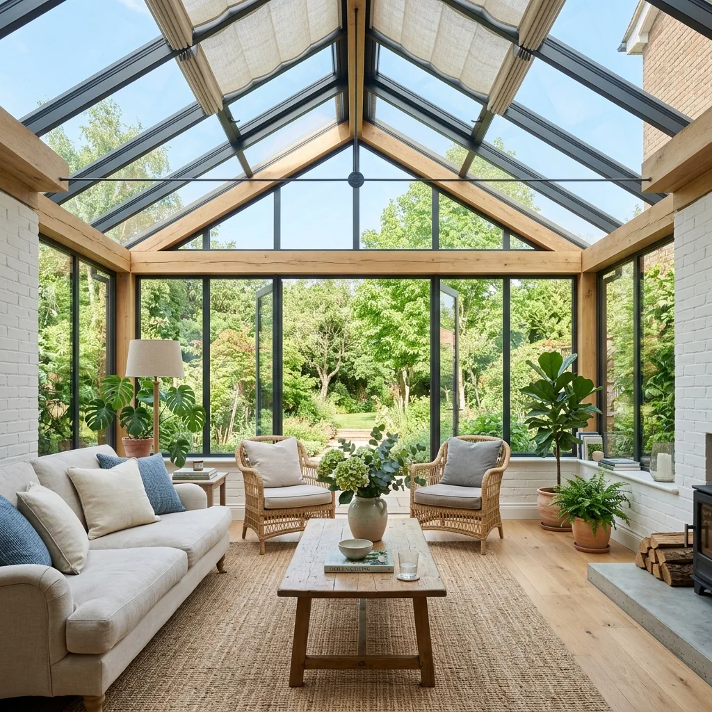
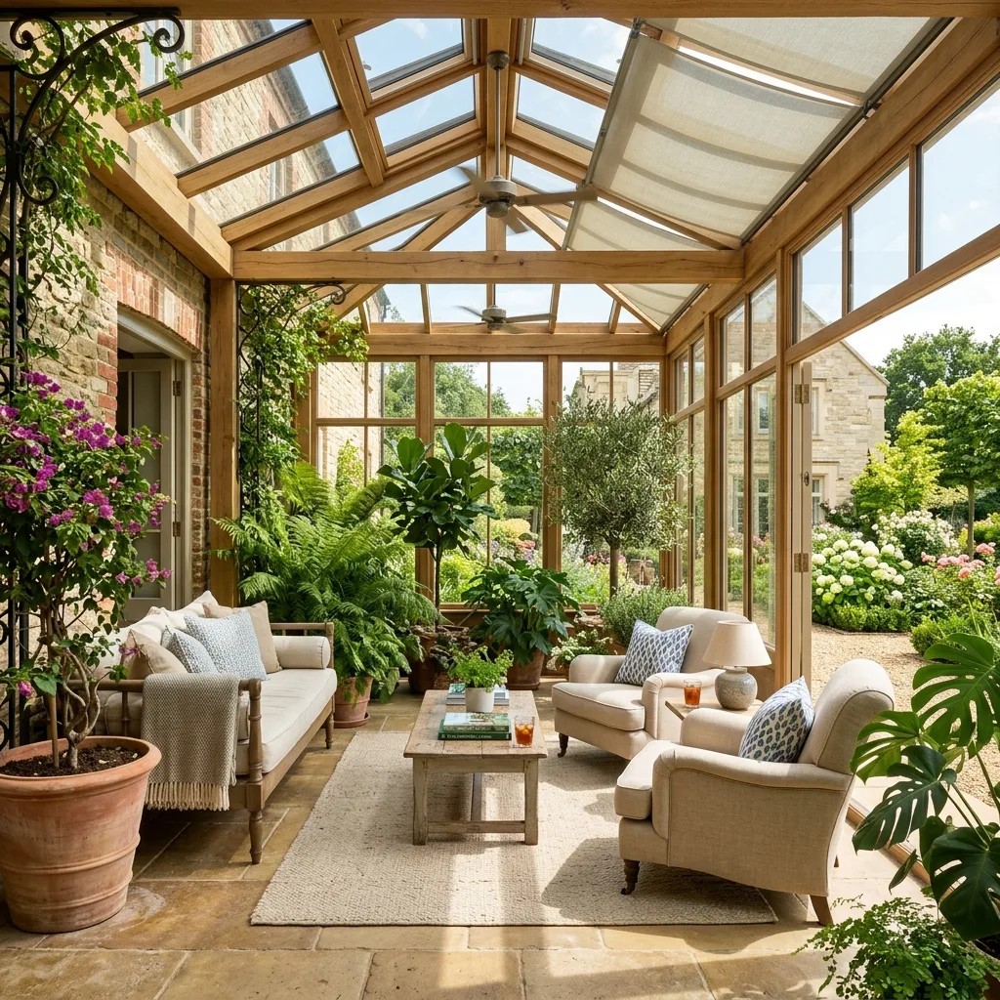
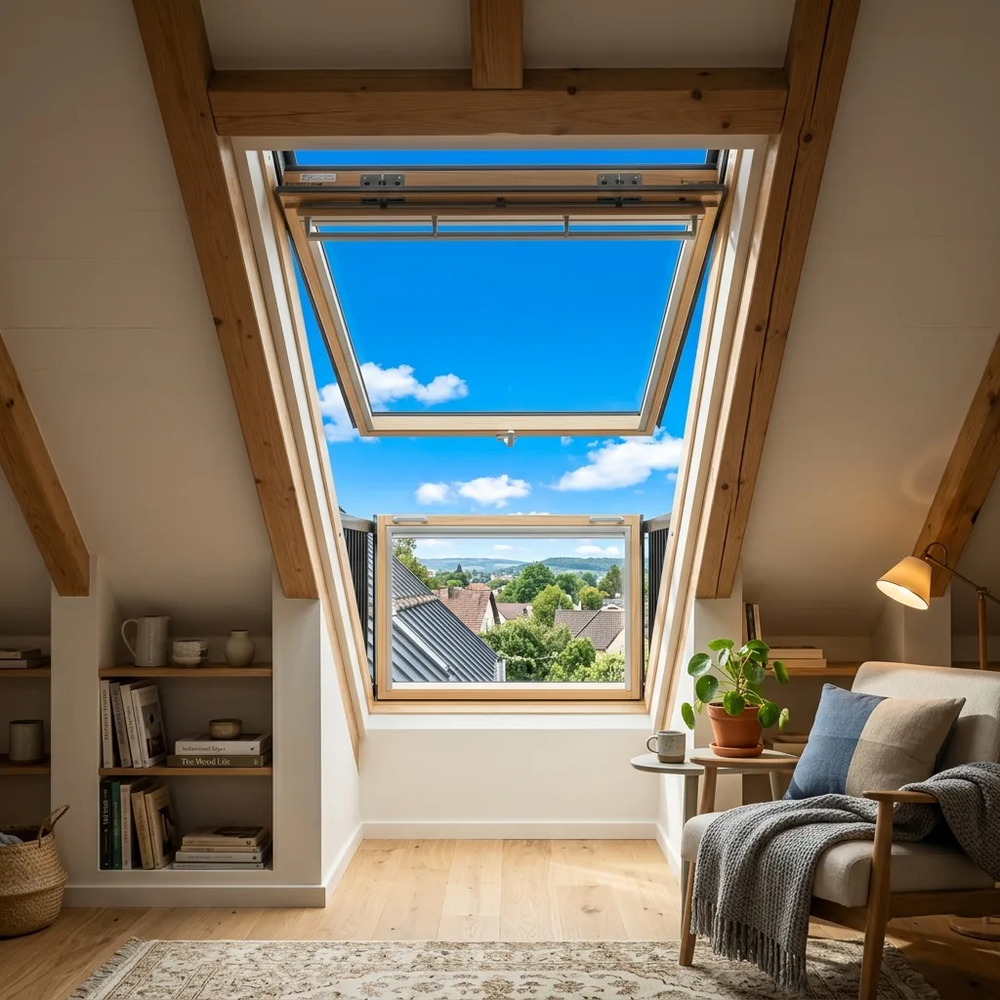
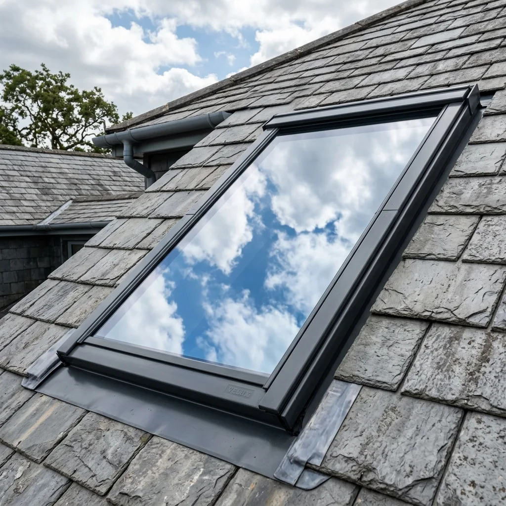

LE BESOIN
Votre quotidien guide le projet.
Une pièce trop chaude, des reflets, une vitrine exposée ou un besoin d’intimité : nous mettons des mots précis sur le résultat attendu.
Films solaires pour vérandas & fenêtres de toit
Véranda trop chaude, chambre sous les combles ou verrière très exposée : nous étudions le vitrage, la toiture et l’usage de votre pièce pour fournir et poser une protection solaire adaptée.

Profiter de l’éclairage naturel.
Limiter les apports solaires de la toiture.
Verre, traitements, polycarbonate : la réponse change.
Le rendu et l’usage de la pièce guident la teinte.
Pose et entretien s’étudient avec la toiture.
Votre configuration d’abord
La pente du vitrage, son matériau et l’usage du lieu changent la réponse. Sélectionnez votre situation pour voir ce que nous examinons.
Nous regardons ensemble les façades, les vitrages de toiture, l’aération et les heures d’occupation. Le choix du film cherche un compromis entre apports solaires, lumière et usage de la véranda au fil des saisons.
Faire étudier ma véranda ↗La référence du vitrage, l’inclinaison, l’exposition et les équipements de la fenêtre de toit comptent. Nous vérifions la face de pose compatible et les contraintes d’accès avant de proposer un film.
Parler de ma fenêtre de toit ↗Une plaque de polycarbonate ne se traite pas comme un vitrage en verre. Des solutions dédiées existent selon le support ; l’état, la composition, le vieillissement et les prescriptions du produit doivent être vérifiés.
Identifier mon support ↗Une véranda reste une pièce entière
La toiture et les parois vitrées d’une véranda reçoivent le soleil différemment au cours de la journée. Traiter une seule face ou tout l’ensemble ne produit pas le même équilibre de lumière.
Nous partons de l’usage recherché : déjeuner, travailler, recevoir ou prolonger le salon. Nous examinons aussi l’aération et les ombrages, car le film n’agit pas sur toutes les causes de surchauffe.


Fenêtre de toit, Velux ou puits de lumière
Une fenêtre inclinée peut recevoir un rayonnement important. Un film solaire compatible permet de travailler les apports solaires et l’éblouissement sans fermer systématiquement la vue vers le ciel.
Le terme Velux désigne ici un type de fenêtre de toit ; la référence exacte du vitrage et les prescriptions de son fabricant sont vérifiées pour le projet.
Une préparation adaptée à la toiture
Une pose extérieure peut être pertinente sur certaines configurations. Elle doit rester compatible avec le vitrage, l’exposition et le produit. Il n’existe pas de règle unique « extérieur pour tout ».
Nous préparons la sécurité d’accès, les conditions météo nécessaires, la propreté du support et les finitions prévues. Les bords et l’entretien suivent les prescriptions de la référence retenue.
Un film pour verre ne se choisit pas automatiquement pour une toiture en plastique. La compatibilité est validée avant l’application.

Conseiller, fournir, poser
Une pièce trop chaude, des reflets, une vitrine exposée ou un besoin d’intimité : nous mettons des mots précis sur le résultat attendu.
Composition du verre, orientation, dimensions, ombrages et conditions d’accès : ces éléments orientent la sélection et la face de pose.
Nous présentons le rendu, les bénéfices, les limites et le périmètre de pose. Le devis correspond à votre projet et à la solution retenue.
Préparation du support, découpe et application selon les prescriptions du fabricant. Nous transmettons les consignes de séchage et d’entretien.
Votre installateur en Auvergne-Rhône-Alpes
Parlons du type de toiture, de votre exposition et de votre usage. Nous vérifions les possibilités avant de vous proposer une solution fournie et posée.
Des réponses pour décider
La référence exacte du vitrage doit être identifiée. Les traitements, la composition, les préconisations du fabricant de la fenêtre et celles du film déterminent la compatibilité. Nous ne promettons pas une pose universelle sur tous les modèles.
Certaines gammes sont destinées aux supports plastiques. Le choix se fait avec le matériau exact et son état. Un film prévu pour du verre ne doit pas être transposé sans vérification.
Cela dépend de la configuration et de la référence compatible. Le verre, la pente, les traitements existants et l’accès sont examinés avant de décider de la face de pose.
Il n’existe pas de baisse de température identique pour toutes les vérandas et chambres. Surface vitrée, ventilation, toiture, climat, exposition et équipements comptent. Notre page sur l’efficacité distingue données du film et mesures de confort.
Oui, le film solaire ne remplace pas la ventilation. Il limite une partie des apports par le vitrage ; renouvellement d’air, ombrage et fonctionnement du bâtiment continuent à participer au confort.
Un besoin, plusieurs façons d’y répondre

Les apports solaires, le choix de lumière et l’étude du vitrage.
Découvrir
Température, ressenti, énergie : les bons repères pour comparer.
Découvrir ChantierPhotos du chantier et explication de l’intervention.
Découvrir